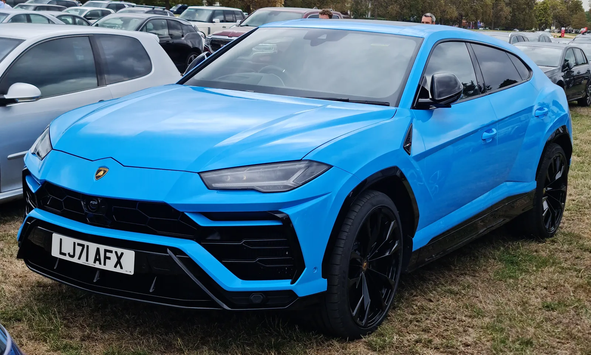
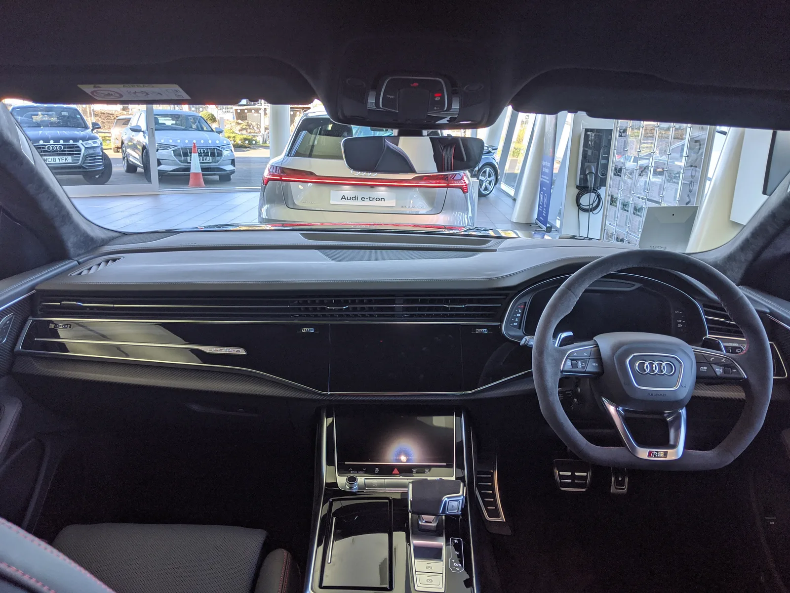

▲ 아우디 RS Q8. 람보르기니 우루스와 플랫폼·엔진을 공유하지만 가격은 12만5천 달러부터 시작한다
람보르기니 우루스가 갖고 싶지만 2억 원이 훌쩍 넘는 신차 가격(약 25만 달러)이 부담스럽다면, 대안으로 눈여겨볼 만한 차가 있습니다. 바로 같은 폭스바겐그룹 산하의 아우디 RS Q8입니다. 두 차는 겉모습만 다를 뿐, 뼈대와 심장이 사실상 동일합니다. 둘 다 폭스바겐그룹의 MLB Evo 플랫폼을 기반으로 하며, 동일한 4.0리터 트윈터보 V8 엔진을 공유합니다.
1. 뼈대도 심장도 같다, 다른 건 배지뿐
우루스와 RS Q8이 플랫폼과 파워트레인을 공유한다는 사실은 폭스바겐그룹 내에서 딱히 비밀도 아닙니다. 같은 그룹 산하의 포르쉐 카이엔, 벤틀리 벤테이가까지 포함하면 총 4개 브랜드가 사실상 같은 기반 위에서 각자의 개성을 입힌 초고성능 SUV를 만들고 있는 셈입니다. 그중에서도 우루스와 RS Q8의 가격 격차가 유독 크게 벌어지는 이유는 순전히 브랜드 포지셔닝 때문입니다. "람보르기니 배지가 대부분의 무거운 작업을 한다"는 평가가 나오는 이유입니다.

▲ 람보르기니 우루스. RS Q8과 플랫폼·엔진을 공유하지만 신차가는 약 2배, 브랜드 프리미엄이 가격 차이의 대부분을 설명한다
2. 신차 12만5천 달러, 중고는 격차가 더 벌어진다
신차 기준으로 우루스는 약 25만 달러, RS Q8은 약 12만5천 달러부터 시작합니다. 정확히 두 배 차이입니다. 중고 시장으로 넘어가면 격차는 오히려 더 벌어지는 경향을 보입니다. RS Q8은 2020~2022년형 기준 평균 7만8,360달러, 상대적으로 최근인 2023~2024년형은 10만 달러 이상에 거래됩니다. 반면 우루스는 감가상각을 거치고도 중고가가 15만 달러를 훌쩍 넘는 경우가 많아, 신차와 중고차 모두에서 상당한 가격 프리미엄이 유지됩니다.
| 구분 | 우루스 | RS Q8 |
|---|---|---|
| 신차 시작가 | 약 $250,000 | 약 $125,000 |
| 플랫폼 | MLB Evo (공유) | |
| 엔진 | 4.0L 트윈터보 V8 (공유) | |
| 중고가(2020~2022년형) | $150,000 이상 | 평균 $78,360 |
| 중고가(2023~2024년형) | - | 평균 $100,000 이상 |

▲ RS Q8 실내. 우루스 대비 화려함은 덜하지만, 동일한 파워트레인을 절반 가격대에 경험할 수 있다는 것이 핵심 매력이다
3. 초기형 구매 시 주의할 점
다만 가격만 보고 무작정 초기 연식을 노리는 것은 주의가 필요합니다. 2020~2022년형처럼 상대적으로 이른 시기에 생산된 RS Q8은 초기 품질 이슈가 보고된 사례가 있는 것으로 알려져 있습니다. 반면 2023~2024년형은 이런 초기 문제들이 상당 부분 개선됐을 가능성이 높은 대신, 가격이 10만 달러 이상으로 다시 올라갑니다. 결국 예산과 신뢰성 사이에서 어느 지점을 택할지는 구매자의 우선순위에 달려 있습니다.

▲ 람보르기니 우루스 S. 브랜드 상징성과 희소성을 원하는 소비자에게는 여전히 대체 불가능한 선택지로 남아있다
4. 정리 — 결국 무엇을 사는가의 문제
같은 뼈대와 심장을 공유한다고 해서 두 차가 완전히 같은 경험을 제공하는 것은 아닙니다. 우루스는 람보르기니라는 브랜드가 주는 희소성과 상징성, 화려한 디자인 디테일까지 포함한 패키지입니다. RS Q8은 그 프리미엄을 덜어내는 대신, 동일한 기계적 쾌감을 훨씬 합리적인 가격에 제공합니다. 결국 선택은 "무엇을 소유하고 있다는 감각"에 얼마의 가치를 매기느냐에 달려 있습니다. 다만 순수하게 주행 성능과 기계적 만족감만 원한다면, RS Q8은 분명 합리적인 대안이 될 수 있습니다.